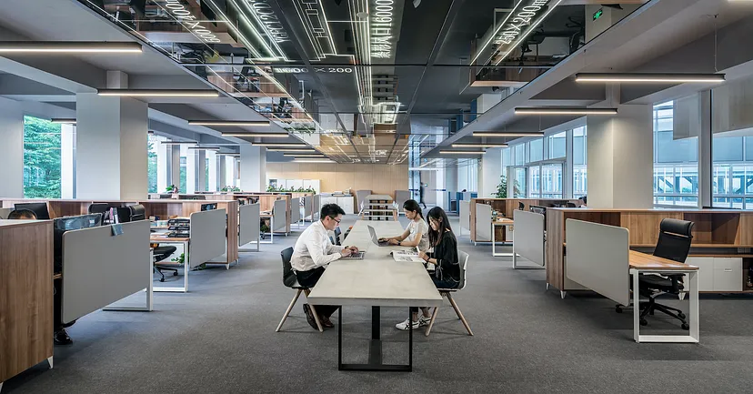

İş Hayatında Toplumsal Cinsiyet

Toplumsal cinsiyet eşitliği son yıllarda hem ülkemizde, hem de dünyada oldukça gündemde olan bir konu. Bu üç kelimeyi toplumsal yaşamın birçok farklı alanında duyuyoruz ama gerçekten ne anlama geldiğini, somut örneklerinin ne olduğunu veya toplumumuza olan etkisinin gerçek boyutlarını biliyor muyuz? Peki bu kavramın, hepimizin ya içinde bulunarak, ya da ailemiz ve arkadaşlarımız aracılığıyla bir şekilde dahil olduğumuz iş hayatında ne kadar büyük bir yer kapladığına dair yeterince fikrimiz var mı?
Toplumsal Cinsiyet Eşitliği Nedir ve Bu Kavram İş Hayatında Ne İfade Eder?
Toplumsal cinsiyet eşitliği, genel anlamıyla her cinsiyetten bireyin toplumsal yaşam içerisindeki tüm alanlarda eşit olması ve tüm alanlara eşit katılım sağlaması anlamına gelir. Bu bireylerin toplum içerisindeki rollerinin farklı olduğu göz önünde bulundurulmak ile birlikte, toplumsal cinsiyet eşitliğine göre tüm bireyler, cinsiyet farklarından bağımsız olarak eşit hak ve fırsatlara sahip olmalıdır. Bunu, iş hayatına uyarladığımızda da benzer bir tanım yapabiliriz; iş hayatında toplumsal cinsiyet eşitliği, çalışma alanlarında tüm bireylerin eşit hak ve fırsatlara sahip olması ve iş hayatı çerçevesinde bu bireylere aynı şekilde davranılması gerektiğini ifade eder. Ancak tabii ki bir konunun yalnızca tanımını yapmak o konuyu tam anlamıyla kafamızda canlandırmamıza yeterli olmayacaktır. Bu nedenle biraz da iş hayatında bu kavrama dair örneklere bakalım.
İş Hayatı ve Toplumsal Cinsiyet Eşitsizlikleri

Toplumsal cinsiyet eşitliğinin bu denli öne çıktığı ve
bilinçlendirme çalışmalarının gittikçe yaygınlaştırıldığı
günümüzde dahi iş hayatında bu kavramın fazlasıyla göz ardı
edildiğini görüyoruz. Konunun en bariz ve somut örneklerinden
bazılarını saymamız gerekirse;
📍Yönetici pozisyonlarında bulunan kadın sayısının erkek sayısına
oranla çok daha az olması,
📍Yapılan aynı iş karşılığında kadınların erkeklere oranla daha az
ücret alması,
📍Kadınların, tercihe bağlı olmayan bir
şekilde işgücüne katılımının daha az olması,
📍İş yerlerinde anne çalışanlara karşı önyargı oluşması,
📍Kadınlara yönelik cinsel taciz vakalarının yaşanması,
📍İşe alım süreçlerinde çocuğu olan kadınlara ayrımcılık
yapılması, kadınlara çocuk yapma planının olup olmadığının
sorulması
ve benzeri örneklerden bahsetmemiz mümkün.
Bu gibi durumları hepimiz çevremizden, sosyal medyadan veya
haberlerden bir şekilde duymuşuzdur. Peki ya istatistikler ne
diyor? Hem Türkiye’deki hem de dünyadaki durumu bariz bir şekilde
gözler önüne seren bazı istatistikler şu şekilde:
🚨Türkiye’de 15 yaşından büyük kadınların istihdam oranı %28. Bu
oran, istihdam oranı %62,8 olan erkeklerin yarısına bile denk
gelmiyor. (TÜİK, 2022)
🚨Türkiye’de 3 yaşından küçük çocuğu olan 25–49 yaş
aralığındaki kadınların istihdam oranı %26,1. Aynı oran erkeklerde
%89,1. (TÜİK, 2022)
🚨Türkiye’de orta ve üst düzey
yönetici pozisyonlarındaki kadın oranı %20,7. (TÜİK, 2022)
🚨Dünya genelinde 25–54 yaş grubundaki erkeklerin işgücüne
katılım oranının %90,6 olduğu görülürken, aynı yaş grubundaki
kadınların işgücüne katılım oranı ise yalnızca %61,4. (ILO, 2023)
🔊Peki, Bu Konuda Neler Yapılabilir?
Bu soruya verilecek çok fazla yanıt var. İş hayatında toplumsal
cinsiyet eşitsizliğine sebep olan durumları elimine etmek için
dünya çapında birçok uygulama mevcut. Ancak en başta yapılması
gerekenin, bu konu hakkında hayata geçirilecek tüm uygulamaların
doğru bir şekilde işlemesine elverecek, kadınların haklarını
aramaktan ve açık geri dönüşler vermekten çekinmedikleri, herkesin
düşüncelere saygı gösterme zorunluluğunun bilincinde olduğu bir
kurum kültürünün oluşturulması olduğunu söylemek mümkün. Böyle bir
kurum kültürünün oturtulması üzerine:
✨Çalışanlara bilinçsiz önyargılar ve iş hayatında toplumsal
cinsiyet eşitliğinin sağlanması üzerine eğitimler verilmesi,
✨Cinsiyet eşitliğini güvence altına alan sağlam bir şirket
politikasının oluşturulması ve çalışanlara bu politikanın
iletişiminin yapılması,
✨Çalışan ücretlerine denetleme yaptırılması,
✨Kadınların da üst düzey pozisyonlarda yer alması için tüm
çalışanlara aynı gelişim olanaklarının sağlanması,
✨İşe alım ve terfi gibi süreçlerin daha aşamalı bir biçimde
tasarlanması ve buralardaki karar vericilerinin karma gruplardan
oluşması,
✨Tüm çalışanlara aynı esnek çalışma opsiyonlarının tanınması,
✨Mentorluk sistemlerinin geliştirilmesi,
✨Aktif bir şekilde işleyen bir geri bildirim sisteminin
geliştirilmesi gibi uygulamaların hayata geçirilmesiyle iş
hayatında toplumsal cinsiyet eşitliğinin sağlanması üzerine önemli
adımlar atılabilir.
Kodluyoruz ve Toplumsal Cinsiyet Eşitliği
Birçok sektörde olduğu gibi yazılım sektöründe de toplumsal cinsiyet eşitliği konusunda büyük eksikler olduğunu söylemek mümkün. Kodluyoruz olarak çalışmalarımızda toplumsal cinsiyet eşitliğine büyük önem veriyor ve tüm programlarımızda sektörün bu doğrultuda da gelişmesini sağlamak için çalışmalar yürütüyoruz. Yazılım sektöründe kadınların ciddi oranda az olduğu günümüzde, kadınların bu sektöre katılımını artırmak için ilk günden beri programlarımızda %50 kadın katılımcı hedefi ile çalışıyoruz. Kadınların bu sektördeki görünürlüklerini, sektöre yönelik becerilerini ve özgüvenlerini artırmak için özel olarak bilgilendirmeler yapıyor ve atölyeler düzenliyoruz. Çalışmalarımıza yönelik oluşturduğumuz Toplumsal Cinsiyet Eşitliği politika belgemiz ile hem kurum kültürümüzde, hem de çalışmalarımızda toplumsal cinsiyet eşitliğinin temel alınmasına büyük önem veriyoruz.
İş Hayatında Toplumsal Cinsiyet Eşitliğini Sağlamak Mümkün Mü?
En temel insan haklarından olan eşitliğin, günümüz modern dünyasının en önde gelen toplumsal alanlarından olan iş hayatı içerisinde bu denli eksik olması gerçekten düşündürücü. Ancak ne yazık ki, belli düzenlemelerle kolayca çözülebilir görünen bu somut durumun arkasında çok daha güçlü ve tehlikeli bir bakış açısı yatıyor. Bireyin ilk yıllarından itibaren içinde bulunduğu toplum, aile yapısı, okul hayatı gibi çeşitli sosyal alanlar onun düşünce yapısının temellerini sarsılamaz bir biçimde oluşturmaya başlıyor. Buradaki toplumsal cinsiyet eşitsizliklerini günlük hayatı çerçevesinde deneyimleyip aklına kazıyan birey, zaman içerisinde bunları normalleştiriyor ve sonuç olarak bu eşitsizlikleri düzeltmeye çalışmak bir yana, burada bir sorun dahi göremeyecek bir bakış açısı geliştiriyor. Yani buradaki asıl sorun, toplumsal cinsiyet eşitsizliklerinin toplumun her alanında sabit bir yer edinmiş olması. Bu nedenle yasalar ve düzenlemelerle ilk çözüm adımlarının atılması gereken bu eşitsizliğin gerçek anlamda bir eşitliğe dönüştürülebilmesi için, toplumsal düzeni ve buna bağlı olarak da bireylerin bakış açısını kökünden değiştirecek bazı radikal değişimlerin gerçekleşmesi gerekiyor.
Toplumsal cinsiyet eşitliği günümüzün en önemli konularından biri. Bu eşitliğin sağlanması yönünde dünya çapında birçok farklı çalışmanın yapıldığını görmek umut verici olsa da bu doğrultuda yürünmesi gereken uzun bir yol var. World Economic Forum’un 2019 yılında yayınladığı rapora göre, ne yazık ki şu an hayatta olan hiç kimse dünyada toplumsal cinsiyet eşitliğinin sağlandığını görecek kadar uzun yaşayamayacak. Gelecek nesillerin böyle bir dünyaya gözlerini açması umuduyla…
Dizi Önerisi 📺:
İş hayatında toplumsal cinsiyet eşitsizliklerinin 1960’lı yıllarda ne kadar vahim olduğunu görmek isteyen okurlara Mad Men dizisini önerebilirim. Bu yapımda tema, reklamcılık sektörü üzerinden işleniyor ama zamanın genel bir değerlendirmesini görmek de mümkün.